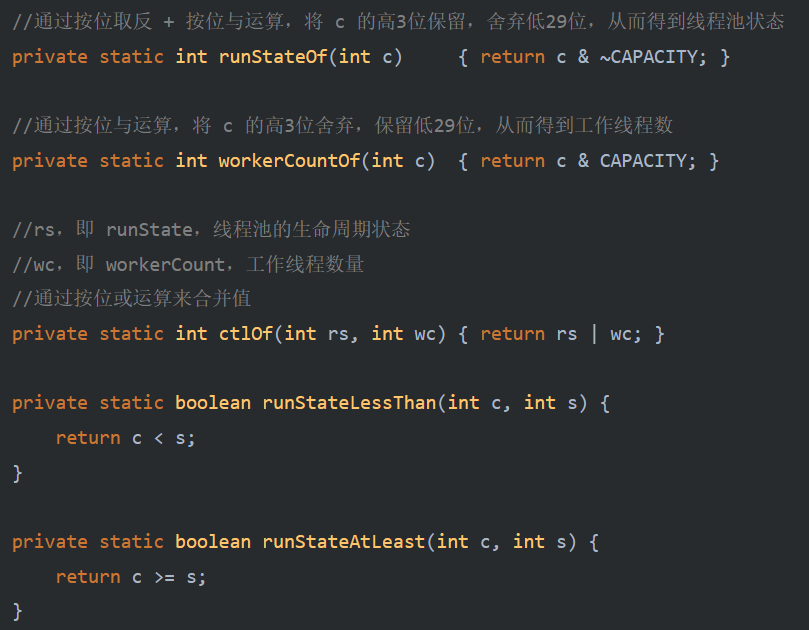

ThreadPoolExecutor
写在前面
1.1 线程池是什么
线程池（Thread Pool）是一种基于池化思想管理线程的工具，经常出现在多线程服务器中，如MySQL。
线程过多会带来额外的开销，其中包括创建销毁线程的开销、调度线程的开销等等，同时也降低了计算机的整体性能。线程池维护多个线程，等待监督管理者分配可并发执行的任务。这种做法，一方面避免了处理任务时创建销毁线程开销的代价，另一方面避免了线程数量膨胀导致的过分调度问题，保证了对内核的充分利用。
而本文描述的线程池是JDK中提供的ThreadPoolExecutor类。
当然，使用线程池可以带来一系列好处：
- 降低资源消耗：通过池化技术重复利用已创建的线程，降低线程创建和销毁造成的损耗。
- 提高响应速度：任务到达时，无需等待线程创建即可立即执行。
- 提高线程的可管理性：线程是稀缺资源，如果无限制创建，不仅会消耗系统资源，还会因为线程的不合理分布导致资源调度失衡，降低系统的稳定性。使用线程池可以进行统一的分配、调优和监控。
- 提供更多更强大的功能：线程池具备可拓展性，允许开发人员向其中增加更多的功能。比如延时定时线程池ScheduledThreadPoolExecutor，就允许任务延期执行或定期执行。
1.2 线程池解决的问题是什么
线程池解决的核心问题就是资源管理问题。在并发环境下，系统不能够确定在任意时刻中，有多少任务需要执行，有多少资源需要投入。这种不确定性将带来以下若干问题：
- 频繁申请/销毁资源和调度资源，将带来额外的消耗，可能会非常巨大。
- 对资源无限申请缺少抑制手段，易引发系统资源耗尽的风险。
- 系统无法合理管理内部的资源分布，会降低系统的稳定性。
为解决资源分配这个问题，线程池采用了“池化”（Pooling）思想。池化，顾名思义，是为了最大化收益并最小化风险，而将资源统一在一起管理的一种思想。
线程池核心设计与实现
2.1 总体设计
ThreadPoolExecutor实现的顶层接口是Executor，顶层接口Executor提供了一种思想：==将任务提交和任务执行进行解耦==。用户无需关注如何创建线程，如何调度线程来执行任务，用户只需提供Runnable对象，将任务的运行逻辑提交到执行器(Executor)中，由Executor框架完成线程的调配和任务的执行部分。ExecutorService接口增加了一些能力：（1）扩充执行任务的能力，补充可以为一个或一批异步任务生成Future的方法；（2）提供了管控线程池的方法，比如停止线程池的运行。AbstractExecutorService则是上层的抽象类，将执行任务的流程串联了起来，保证下层的实现只需关注一个执行任务的方法即可。最下层的实现类ThreadPoolExecutor实现最复杂的运行部分，ThreadPoolExecutor将会一方面维护自身的生命周期，另一方面同时管理线程和任务，使两者良好的结合从而执行并行任务。
线程池在内部实际上构建了一个生产者消费者模型，将线程和任务两者解耦，并不直接关联，从而良好的缓冲任务，复用线程。线程池的运行主要分成两部分：任务管理、线程管理。任务管理部分充当生产者的角色，当任务提交后，线程池会判断该任务后续的流转：（1）直接申请线程执行该任务；（2）缓冲到队列中等待线程执行；（3）拒绝该任务。线程管理部分是消费者，它们被统一维护在线程池内，根据任务请求进行线程的分配，当线程执行完任务后则会继续获取新的任务去执行，最终当线程获取不到任务的时候，线程就会被回收。
启动demo
在该demo中，我们设置了：
核心线程数 2
最大线程数 4
使用ArrayBlockQuene作为阻塞队列，容量为2（因为我们要观察到核心线程跟非核心线程，所以这里我们使用有界队列，==若使用无界的LinkedBlockingQueue, 则只能观察到核心线程在工作，非线程线程将没有机会创建==）
先看结果：可以看到，我们喂了9个任务，最终只有6个任务被执行，多余的任务被拒绝
解释是： 如果提交的任务数超过了线程池的最大线程数和等待队列的容量之和，并且使用默认的拒绝策略（AbortPolicy），那么所有新提交的任务都将被拒绝并抛出
从demo中我们可以看到，执行任务的关键入口函数是excute, 那么，我们从这个函数出发来了解线程池的源码, 不过在这之前，我们要对ThreadPoolExecutor中的一些基础属性和方法有所了解。
-前置知识
线程池的状态
线程池运行的状态，并不是用户显式设置的，而是伴随着线程池的运行，由内部来维护。线程池内部使用一个变量维护两个值：==运行状态(runState)和线程数量 (workerCount)==。在具体实现中，线程池将运行状态(runState)、线程数量 (workerCount)两个关键参数的维护放在了一起 。
ctl这个AtomicInteger类型，是对线程池的运行状态和线程池中有效线程的数量进行控制的一个字段， 它同时包含两部分的信息：线程池的运行状态 (runState) 和线程池内有效线程的数量 (workerCount)，==高3位保存runState，低29位保存workerCount==，两个变量之间互不干扰。用一个变量去存储两个值，可避免在做相关决策时，出现不一致的情况，不必为了维护两者的一致，而占用锁资源。
线程池一共包含以下五种生命周期状态，涵盖了线程池从启动到终止的这整个范围。线程池的生命周期状态可以按顺序跃迁，但无法反向回转，每个状态的数值大小也是逐步递增的
其生命周期转换如下入所示 ：
ThreadPoolExecutor 还声明了以下常量来参与以上状态有关的运算
相应地，根据线程池状态的单向性，ThreadPoolExecutor 还设置了一些简易方法对线程池的状态进行访问和设置

-excute
了解了这些前置知识，我们回到线程池对新任务处理的入口excute方法中
public void execute(Runnable command) {
if (command == null)
throw new NullPointerException();
int c = ctl.get();
// workerCountOf(c): 当前线程池中的工作线程数
if (workerCountOf(c) < corePoolSize) {
//如果当前线程数还未达到 corePoolSize，则尝试创建一个核心线程来处理任务
// addWorker第二个形参设置为ture，表明创建的是核心线程
// addWorker 可能会因为线程池被关闭了、线程数量超出限制等原因返回 false
if (addWorker(command, true))
// 如果成功了 直接返回
return;
// 否则，重新获取线程池状态
c = ctl.get();
}
if (isRunning(c) && workQueue.offer(command)) { // 若线程池还处于运行状态且成功添加任务到任务队列
// 重新检查运行状态
int recheck = ctl.get();
// 1.若此时线程池不在运行状态 且 移除任务成功 则走拒绝策略
// 2.若此时线程池还在运行状态 但线程池中的工作线程数为0，则新建一个非核心的线程
// 这一步的意义在于：corePoolSize 可以被设为 0，所以这里需要检查下，在需要的时候创建一个非核心线程
if (! isRunning(recheck) && remove(command))
reject(command);
else if (workerCountOf(recheck) == 0)
addWorker(null, false); // 此时workQueue中已有任务，但线程池中没有工作线程，所以需要创建一个工作线程来处理
}
//如果线程池处于非运行状态了，或者是处于运行状态 但队列已满了
//在这里尝试创建一个非核心线程来处理任务
//如果线程创建失败 说明线程池处在非运行状态或线程数达到最大
//走拒绝策略
else if (!addWorker(command, false))
reject(command);`
}问题1：哪些状态下线程池可以创建新的线程？or shutdown状态到底是否可以创建新线程？
可以看到，excute中其实就是对线程池中线程数和阻塞队列的情况来进行判断，确定对新发来的任务的一个执行策略，是创建核心线程？还是加入到阻塞队列？还是创建一个非核心线程来处理？或者触发拒绝策略
这里需要明晰的一点是， 线程池的设计目的是为了复用线程，避免创建和销毁线程的开销，因此==在没有必要的情况下，线程池尽可能地复用已有线程，而不是频繁地创建和销毁线程==。 所以在核心线程池满时，线程池是优先将任务放到队列中等待，而不是去创建一个非核心线程。
接着，我们来看excute中频繁出现的一个方法，addWorker
-addworker
private boolean addWorker(Runnable firstTask, boolean core) {
retry:
for (;;) { // 循环重试
int c = ctl.get();
int rs = runStateOf(c); // 拿到当前线程池状态
// 进行状态检查，防止在不合适的情况下创建新线程
// 1. 如果 rs > SHUTDOWN 则为if中为（T & !(F) = T）直接返回false
// 2. 如果rs = SHUTDOWN 则简化为
// !(firstTask == null && !workQueue.isEmpty())
// 2.1 初始任务firstTask为空 且 阻塞队列中仍有任务, 可继续
// 2.2 否则，firstTask不为空 或 阻塞队列为空，不能加入新的任务返回false
if (rs >= SHUTDOWN &&
! (rs == SHUTDOWN &&
firstTask == null &&
! workQueue.isEmpty()))
return false;
for (;;) {
int wc = workerCountOf(c);
// 当前线程数已经超出限制 返回false
if (wc >= CAPACITY ||
wc >= (core ? corePoolSize : maximumPoolSize))
return false;
if (compareAndIncrementWorkerCount(c))
// 通过 CAS 更新工作者线程数成功后就跳出循环，去实际创建线程
break retry;
c = ctl.get(); // 重新检测线程池状态
if (runStateOf(c) != rs)
// 若循环过程中线程池状态被改变了，重新循环
continue retry;
}
}
boolean workerStarted = false;
boolean workerAdded = false;
Worker w = null;
try {
// 根据任务创建一个worker
// worker实现了AQS与Runnable,且内部继承了thread
// 创建一个worker同时也通过ThreadFactory创建了一个线程
w = new Worker(firstTask);
final Thread t = w.thread;
if (t != null) {
// 这里加锁的作用？
final ReentrantLock mainLock = this.mainLock;
mainLock.lock();
try {
int rs = runStateOf(ctl.get());
// 如果线程池的状态小于 SHUTDOWN 或者
// 状态等于 SHUTDOWN 并且等待队列中没有等待执行的任务
// 只要线程池未被关闭或者已关闭但等待队列中还有任务，则可以继续添加工作线程？
if (rs < SHUTDOWN ||
(rs == SHUTDOWN && firstTask == null)) {
// 在实际创建工作线程之前，先检查该线程是否已经启动
if (t.isAlive())
throw new IllegalThreadStateException();
workers.add(w); // 将新建的工作线程添加到工作线程集合workers
// 更新池中的最大工作线程数largestPoolSize
int s = workers.size();
if (s > largestPoolSize)
largestPoolSize = s;
// 表示已经成功地添加了一个工作线程
workerAdded = true;
}
} finally {
mainLock.unlock();
}
// 如果工作线程成功添加 则调用其start方法启动
if (workerAdded) {
t.start();
// 表示已经成功地启动了一个工作线程
workerStarted = true;
}
}
} finally {
if (! workerStarted)
// 工作线程未成功启动 进行清理工作
// 将workerCount原子计数器减1，以及将Worker对象从workers集合中移除
addWorkerFailed(w);
}
return workerStarted;
}addWorker(Runnable firstTask, boolean core) 方法用于尝试创建并启动线程，同时将线程保存到 workers ，该方法在实际创建线程前，都需要先通过 CAS 来更新（递增加一）当前的线程总数，通过 for 循环来不断进行重试。当 CAS 成功后，则会再来实际进行线程的创建操作。但在这时候线程也未必能够创建成功，因为在 CAS 成功后线程池可能被关闭了，或者是在创建线程时抛出异常了，此时就需要回滚对 workerCount 的修改。
该方法如果返回 true，意味着==新创建了一个 Worker 线程，同时线程也被启动了==
该方法如果返回 false，则可能是由于以下情况：
生命周期状态大于SHUTDOWN
生命周期状态等于 SHUTDOWN，但 firstTask 不为 null，或者任务队列为空
（反过来想，在SHUTDOWN状态时，当fisttask=null, 且队列中仍有任务时，addworker的作用是创建一个不带初始任务的线程来处理队列中的任务）
当前线程数已经超出限制
符合创建线程的条件，但创建过程中或启动线程的过程中抛出了异常
现在我们已经了解到，在excute方法中，我们传入一个实现Runnable的任务，接着判断如何处理这个任务，是创建核心线程？还是加入到阻塞队列？还是创建一个非核心线程来处理？或者触发拒绝策略
如果要创建线程，采用的正是addworker方法。同时addworker在创建的同时会启动该线程。
但我们目前还没有看到线程的复用在哪里体现，以及worker中的线程是如何处理任务的，因此，我们继续往下深挖worker类的实现。
-worker
private final class Worker
extends AbstractQueuedSynchronizer
implements Runnable
{
private static final long serialVersionUID = 6138294804551838833L;
final Thread thread;
Runnable firstTask;
volatile long completedTasks;
Worker(Runnable firstTask) {
setState(-1); // 设置AQS初始状态为-1，在调用runWorker之前禁止中断
this.firstTask = firstTask;
// 使用线程池工厂创建线程
this.thread = getThreadFactory().newThread(this);
}
public void run() {
runWorker(this);
}
// Lock methods
//
// The value 0 represents the unlocked state.
// The value 1 represents the locked state.
protected boolean isHeldExclusively() {
return getState() != 0;
}
protected boolean tryAcquire(int unused) {
if (compareAndSetState(0, 1)) {
setExclusiveOwnerThread(Thread.currentThread());
return true;
}
return false;
}
protected boolean tryRelease(int unused) {
setExclusiveOwnerThread(null);
setState(0);
return true;
}
// 如果 Worker 线程当前没有被占用，返回 true，并将 state 变量的值设置为 1
// 如果 Worker 线程已经被占用，返回 false
public void lock() { acquire(1); }
public boolean tryLock() { return tryAcquire(1); }
// 将Worker对象的state状态值设置为0，释放了Worker对象持有的独占锁。
// 同时，该方法还会唤醒一个等待队列中的线程，让它们尝试获取锁。
public void unlock() { release(1); }
public boolean isLocked() { return isHeldExclusively(); }
void interruptIfStarted() {
Thread t;
if (getState() >= 0 && (t = thread) != null && !t.isInterrupted()) {
try {
t.interrupt();
} catch (SecurityException ignore) {
}
}
}
}Worker 继承于 AbstractQueuedSynchronizer，意味着 Worker 就相当于一个锁 ， 自定义实现了不可重入的特性来辅助判断线程是否处于执行任务的状态：在开始执行任务前进行加锁，在任务执行结束后解锁，以便在后续通过判断 Worker 是否处于锁定状态来得知其是否处于执行阶段 。
1.Worker 在开始执行任务前会执行 Worker.lock() ，表明线程正在执行任务
2.如果 Worker 处于锁定状态，则不应该对其进行中断，避免任务执行一半就被打断
3.如果 Worker 处于非锁定状态，说明其当前是处于阻塞获取任务的状态，此时才允许对其进行中断
4.线程池在执行 shutdown() 方法或 shutdownNow() 方法时会调用 interruptIdleWorkers() 方法来回收空闲的线程，interruptIdleWorkers() 方法会使用Worker.tryLock() 方法来尝试获取锁，由于 Worker 是不可重入锁，所以如果锁获取成功就说明线程处于空闲状态，此时才可以进行回收
Worker 同时也是 Runnable 类型，thread 是通过 getThreadFactory().newThread(this) 来创建的，即将 Worker 本身作为构造参数传给 Thread 进行初始化，所以在 thread 启动的时候 Worker 的 run() 方法就会被执行。
final void runWorker(Worker w) {
Thread wt = Thread.currentThread();
Runnable task = w.firstTask;
w.firstTask = null;
//因为 Worker中state的默认值是 -1，而 Worker 的 interruptIfStarted() 方法只有在 state >=0 的时候才允许进行中断
//所以这里调用 unlock() 并不是为了解锁，而是为了让 Worker 的 state 值变为 0，让 Worker 允许外部进行中断
w.unlock();
//用于标记是否由于被打断而非正常结束导致的线程终止
//为 true 表示非正常结束
boolean completedAbruptly = true;
try {
while (task != null || (task = getTask()) != null) {
//在开始执行任务前进行加锁，在任务执行结束后解锁
//以便在后续通过判断 Worker 是否处于锁定状态来得知其是否处于执行阶段
w.lock();
// 判断线程池的状态是否需要停止，并在需要停止时中断该工作线程。
if ((runStateAtLeast(ctl.get(), STOP) ||
(Thread.interrupted() &&
runStateAtLeast(ctl.get(), STOP))) &&
!wt.isInterrupted())
wt.interrupt();
try {
// 提供一个在任务执行前的扩展点，让子类或者用户可以在任务执行前执行一些额外的操作。
// 例如记录日志、检查环境等
beforeExecute(wt, task);
Throwable thrown = null;
try {
task.run();
} catch (RuntimeException x) {
thrown = x; throw x;
} catch (Error x) {
thrown = x; throw x;
} catch (Throwable x) {
thrown = x; throw new Error(x);
} finally {
// 提供一个在任务执行后的扩展点
afterExecute(task, thrown);
}
} finally {
task = null;
w.completedTasks++;
w.unlock();
}
}
// 如果线程是被中断 则下面这条语句就无法运行
completedAbruptly = false;
} finally {
//回收此线程
processWorkerExit(w, completedAbruptly);
}
}runWorker(Worker) 方法就是线程正式进行任务执行的地方。该方法通过 while 循环不断从任务队列中取出任务来进行执行，如果 getTask()方法返回了 null，那此时就需要将此线程进行回收。如果在任务执行过程中抛出了异常，那也需要回收此线程。
-getTask
private Runnable getTask() {
boolean timedOut = false; // Did the last poll() time out?
for (;;) {
int c = ctl.get();
int rs = runStateOf(c);
// Check if queue empty only if necessary.
//如何当前状态大于等于 STOP，则返回 null
//如何当前状态是 SHUTDOWN 且任务队列为空，则返回 null
if (rs >= SHUTDOWN && (rs >= STOP || workQueue.isEmpty())) {
// 此时应该将工作线程数量减 1，因为这个线程已经无法获取到任务了，需要被回收
decrementWorkerCount();
return null;
}
int wc = workerCountOf(c);
//timed 用于标记从任务队列中取任务时是否需要进行超时控制
//如果允许回收空闲核心线程或者是当前的线程总数已经超出 corePoolSize 了，
//那么就需要进行超时控制
boolean timed = allowCoreThreadTimeOut || wc > corePoolSize;
//1. 线程总数超出 maximumPoolSize
//2. 允许回收核心线程，且核心线程的空闲时间已达到限制了
//如果以上两种情况之一有一个满足，说明要进行线程回收了
//若当前线程数大于 1 或 任务队列为空 就尝试进行线程回收
// wc > 1 ：避免在任务队列不为空且只有一个线程时还回收线程导致任务没人处理
if ((wc > maximumPoolSize || (timed && timedOut))
&& (wc > 1 || workQueue.isEmpty())) {
if (compareAndDecrementWorkerCount(c))
return null;
continue;
}
try {
// 根据是否需要超时控制选择不同的取task策略
Runnable r = timed ?
workQueue.poll(keepAliveTime, TimeUnit.NANOSECONDS) : // 超时返回
workQueue.take(); // 阻塞取
if (r != null)
return r;
//如果 r 为 null，说明是由于超时导致 poll 返回了 null
//在下一次循环时将判断是否回收此线程
timedOut = true;
} catch (InterruptedException retry) {
timedOut = false;
}
}
}-线程的回收
当外部调用了线程池的以下几个方法之一时，就会触发到线程的回收机制：
- 允许回收核心线程：allowCoreThreadTimeOut()
- 重置核心线程池大小：setCorePoolSize()
- 重置最大线程池大小：setMaximumPoolSize()
- 重置线程最大空闲时间：setKeepAliveTime()
- 关闭线程池：shutdown()
- 停止线程池：shutdownNow()
/**
* 用于控制核心线程是否可以由于空闲时间超时而被回收
* 超时时间和非核心线程一样由 keepAliveTime 来指定
* 该方法应该在线程池激活前使用
*/
public void allowCoreThreadTimeOut(boolean value) {
if (value && keepAliveTime <= 0)
throw new IllegalArgumentException("Core threads must have nonzero keep alive times");
if (value != allowCoreThreadTimeOut) {
allowCoreThreadTimeOut = value;
if (value)
//回收掉空闲线程
interruptIdleWorkers();
}
}
/**
* 重置 corePoolSize
*/
public void setCorePoolSize(int corePoolSize) {
if (corePoolSize < 0)
throw new IllegalArgumentException();
int delta = corePoolSize - this.corePoolSize;
this.corePoolSize = corePoolSize;
if (workerCountOf(ctl.get()) > corePoolSize)
//如果当前的线程总数已经超出新的 corePoolSize 的话那就进行线程回收
interruptIdleWorkers();
else if (delta > 0) {
//会走进这里，说明新的 corePoolSize 比原先的大，但当前线程总数还小于等于新的 corePoolSize
//此时如果任务队列不为空的话，那么就需要创建一批新的核心线程来处理任务
//delta 和 workQueueSize 中的最小值就是需要启动的线程数
//而如果在创建过程中任务队列已经空了（被其它线程拿去处理了），那就不再创建线程
int k = Math.min(delta, workQueue.size());
while (k-- > 0 && addWorker(null, true)) {
if (workQueue.isEmpty())
break;
}
}
}
/**
* 用于设置线程池允许存在的最大活跃线程数
*
* @param maximumPoolSize
*/
public void setMaximumPoolSize(int maximumPoolSize) {
if (maximumPoolSize <= 0 || maximumPoolSize < corePoolSize)
throw new IllegalArgumentException();
this.maximumPoolSize = maximumPoolSize;
if (workerCountOf(ctl.get()) > maximumPoolSize)
//回收掉空闲线程
interruptIdleWorkers();
}
/**
* 用于设置非核心线程在空闲状态能够存活的时间
*/
public void setKeepAliveTime(long time, TimeUnit unit) {
if (time < 0)
throw new IllegalArgumentException();
//为了避免频繁创建线程，核心线程如果允许超时回收的话，超时时间不能为 0
if (time == 0 && allowsCoreThreadTimeOut())
throw new IllegalArgumentException("Core threads must have nonzero keep alive times");
long keepAliveTime = unit.toNanos(time);
long delta = keepAliveTime - this.keepAliveTime;
this.keepAliveTime = keepAliveTime;
if (delta < 0) //如果新设置的值比原先的超时时间小的话，那就需要去回收掉空闲线程
interruptIdleWorkers();
}
/**
* 关闭线程池
*/
public void shutdown() {
final ReentrantLock mainLock = this.mainLock;
mainLock.lock();
try {
checkShutdownAccess();
//将当前状态设置为 SHUTDOWN
advanceRunState(SHUTDOWN);
//回收掉空闲线程
interruptIdleWorkers();
onShutdown(); // hook for ScheduledThreadPoolExecutor
} finally {
mainLock.unlock();
}
//尝试看是否能把线程池状态置为 TERMINATED
tryTerminate();
}
/**
* 停止线程池
*/
public List<Runnable> shutdownNow() {
List<Runnable> tasks;
final ReentrantLock mainLock = this.mainLock;
mainLock.lock();
try {
checkShutdownAccess();
//将当前状态设置为 STOP
advanceRunState(STOP);
//回收掉空闲线程
interruptWorkers();
//获取任务队列中缓存的所有任务
tasks = drainQueue();
} finally {
mainLock.unlock();
}
//尝试看是否能把线程池状态置为 TERMINATED
tryTerminate();
return tasks;
}-interruptIdleWorkers
上述的几个方法最终都会调用 interruptIdleWorkers(boolean onlyOne) 方法来回收空闲线程。该方法通过向线程发起中断请求来使 Worker 退出 runWorker(Worker w) 方法，最终会调用 processWorkerExit(Worker w, boolean completedAbruptly) 方法来完成实际的线程回收操作
private void interruptIdleWorkers() {
interruptIdleWorkers(false);
}
// onlyOne： 是否只中断一个线程
private void interruptIdleWorkers(boolean onlyOne) {
final ReentrantLock mainLock = this.mainLock;
mainLock.lock();
try {
for (Worker w : workers) {
Thread t = w.thread;
// woker的线程当前未被中断且worker出在空闲状态
if (!t.isInterrupted() && w.tryLock()) {
try {
t.interrupt();
} catch (SecurityException ignore) {
} finally {
w.unlock();
}
}
if (onlyOne)
break;
}
} finally {
mainLock.unlock();
}
}
/**
* 回收线程
*
* @param w Worker
* @param completedAbruptly 是否是由于任务执行过程抛出异常导致需要来回收线程
* true：由于任务抛出异常
* false：由于线程空闲时间达到限制条件
*/
private void processWorkerExit(Worker w, boolean completedAbruptly) {
if (completedAbruptly) // 若是被中断的线程，这里手动将WorkerCount-1补上
decrementWorkerCount();
final ReentrantLock mainLock = this.mainLock;
mainLock.lock();
try {
//更新线程池总共处理过的任务数
completedTaskCount += w.completedTasks;
//移除此线程
workers.remove(w);
} finally {
mainLock.unlock();
}
tryTerminate();
int c = ctl.get();
if (runStateLessThan(c, STOP)) {
//在任务队列不为空的时候，需要确保至少有一个线程可以来处理任务，否则就还是需要再创建一个新线程
if (!completedAbruptly) {
int min = allowCoreThreadTimeOut ? 0 : corePoolSize;
if (min == 0 && !workQueue.isEmpty())
min = 1;
if (workerCountOf(c) >= min)
return; // replacement not needed
}
//
addWorker(null, false);
}
}
-思考
核心线程与非核心线程并非是固定的角色，而只是表明线程池中存在的线程数处在何种状态？
所有的worker都存放在worker缓存中，并未区分角色
只是当要新建线程或回收线程，根据核心线程数设定的阈值会影响具体的策略？
1.在interruptIdleWorkers中对所有worker进行判断，如何避免核心线程被回收？
2.当核心线程不允许回收，但workQueue中没有任务或任务数总少于核心线程数时，线程池是如何防止核心线程不被回收的？
//timed 用于标记从任务队列中取任务时是否需要进行超时控制
//如果允许回收空闲核心线程或者是当前的线程总数已经超出 corePoolSize 了，
//那么就需要进行超时控制
boolean timed = allowCoreThreadTimeOut || wc > corePoolSize;
//1. 线程总数超出 maximumPoolSize
//2. 允许回收核心线程，且核心线程的空闲时间已达到限制了
//如果以上两种情况之一有一个满足，说明要进行线程回收了
//若当前线程数大于 1 或 任务队列为空 就尝试进行线程回收
// wc > 1 ：避免在任务队列不为空且只有一个线程时还回收线程导致任务没人处理
if ((wc > maximumPoolSize || (timed && timedOut))
&& (wc > 1 || workQueue.isEmpty())) {
if (compareAndDecrementWorkerCount(c))
return null;
continue;
}-实验
我们进行一个实验来测试触发interruptIdleWorkers方法后对线程池中线程数的影响
继续沿用最开始的demo, 只不过我们首先缩短了keepAliveTime的时间，使现象更加明显，我们在线程执行任务的代码后添加了两段for语句，使用getPoolSize()函数来获取线程池中的线程数量。
-调用allowCoreThreadTimeOut，允许回收空闲的核心线程
运行结果：
在设置allowCoreThreadTimeOut=true之前，繁忙时线程池创建了3个线程，执行完后保留了2个核心线程，设置之后可以看到，核心线程被回收。
-调用setCorePoolSize，修改核心线程数为1
-调用setCorePoolSize，修改核心线程数为3
-调用shutdown/shutdownNow
-调用setMaximumPoolSize, 设置最大线程数为3
-调用setMaximumPoolSize, 设置最大线程数为1
可以看到，只要不设置允许回收核心线程，或者将核心线程数改小，即使任务队列为空，核心线程空闲，也不会回收核心线程。
-结论
原因？
int c = ctl.get();
if (runStateLessThan(c, STOP)) {
//在任务队列不为空的时候，需要确保至少有一个线程可以来处理任务，否则就还是需要再创建一个新线程
if (!completedAbruptly) {
int min = allowCoreThreadTimeOut ? 0 : corePoolSize;
if (min == 0 && !workQueue.isEmpty())
min = 1;
if (workerCountOf(c) >= min)
return; // replacement not needed
}
//
addWorker(null, false);
}
关键点在于processWorkerExit中的这段代码，在processWorkerExit中确实将传入的worker进行了回收，但它在回收之后进行了补充：
1.若是被中断的线程，则直接补充一个新线程；
2.若是空闲时间超时的线程(getTask()返回null, runWorker()顺利执行完毕)，则需要计算当前状态下线程池中的最小线程数min，可以看到，min为0或者corePoolSize，由allowCoreThreadTimeOut参数决定，如果线程数少于min，则会补充一个新线程；
-线程池的关闭
shutdown() 和 shutdownNow() 方法可以用来关闭和停止线程池
- shutdown()。使用该方法，已提交的任务会被继续执行，而后续新提交的任务则会走拒绝策略。该方法返回时，线程池可能尚未走向终止状态 TERMINATED，即线程池中可能还有线程还在执行任务
- shutdownNow()。使用该方法，正在运行的线程会尝试停止，任务队列中的任务也不会执行而是作为方法返回值返回。由于该方法是通过调用
Thread.interrupt()方法来停止正在执行的任务的，因此某些无法响应中断的任务可能需要等到任务完成后才能停止线程
由于这两个方法调用过后线程池都不会再接收新任务了，所以在回收空闲线程后，还需要检查下线程是否都已经回收完毕了，是的话则需要将线程池的生命周期状态向 TIDYING 和 TERMINATED 迁移
final void tryTerminate() {
for (;;) {
int c = ctl.get();
//在以下几种情况不需要终止线程池：
//1.还处于运行状态
//2.已经处于 TIDYING 或 TERMINATED 状态
//3.处于 SHUTDOWN 状态且还有待处理的任务
if (isRunning(c) ||
runStateAtLeast(c, TIDYING) ||
(runStateOf(c) == SHUTDOWN && ! workQueue.isEmpty()))
return;
//在达到 TIDYING 状态前需要确保所有线程都被关闭了
if (workerCountOf(c) != 0) { // Eligible to terminate
interruptIdleWorkers(ONLY_ONE);
return;
}
final ReentrantLock mainLock = this.mainLock;
mainLock.lock();
try {
if (ctl.compareAndSet(c, ctlOf(TIDYING, 0))) {
try {
//terminated() 方法执行完毕后，线程池状态就从 TIDYING 转为 TERMINATED 了，此时线程池就走向终止了
terminated();
} finally {
ctl.set(ctlOf(TERMINATED, 0));
//唤醒所有在等待线程池 TERMINATED 的线程
termination.signalAll();
}
return;
}
} finally {
mainLock.unlock();
}
// else retry on failed CAS
}
}
-任务队列的选择
线程池实现解耦的关键就是有了 任务队列/阻塞队列 的存在。线程池中是以生产者消费者模式+阻塞队列来实现的，任务队列负责缓存外部提交的任务，线程负责从任务队列取出任务，这样客户端提交的任务就避免了和线程直接关联
选择不同的阻塞队列可以实现不一样的任务存取策略：
-拒绝策略
被拒绝的任务具体的处理策略则由 RejectedExecutionHandler 来进行定义 、
当客户端提交的任务被拒绝时，线程池关联的 RejectedExecutionHandler 对象的 rejectedExecution 方法就会被调用，相应的拒绝策略可以由客户端来指定
ThreadPoolExecutor 提供了以下几种拒绝策略，默认使用的是 AbortPolicy
任务的拒绝策略只会在提交任务的时候被触发，即只在 execute(Runnable command) 方法中被触发到。execute(Runnable command) 方法会判断当前状态是否允许接受该任务，如果不允许的话则会走拒绝任务的流程
-监控线程池的运行状态
ThreadPoolExecutor 提供了多个配置参数以便满足多种不同的需求，这些配置参数包含：corePoolSize、maximumPoolSize、keepAliveTime、allowCoreThreadTimeOut 等。但很多时候我们一开始使用线程池时并不知道该如何配置参数才最为适应当前需求，那么就只能通过监控线程池的运行状态来进行考察，最终得到一份最合理的配置参数
可以通过 ThreadPoolExecutor 的以下几个属性来监控线程池的运行状态：
taskCount：线程池已执行结束（不管成功与否）的任务数加上任务队列中目前包含的任务数completedTaskCount：线程池已执行结束（不管成功与否）的任务数，小于等于 taskCountlargestPoolSize：线程池曾经创建过的最大线程数量。如果该数值等于 maximumPoolSize 那就说明线程池曾经满过getPoolSize()：获取当前线程总数getActiveCount()：获取当前正在执行任务的线程总数
此外，ThreadPoolExecutor 也预留了几个钩子方法可以由子类去实现。通过以下几个方法，就可以实现每个任务开始执行前和执行后，以及线程池走向终止时插入一些自定义的监控代码，以此来实现：计算任务的平均执行时间、最小执行时间和最大执行时间等功能